A glance through the pages of this book should convince you that there are a lot of graphs in economics. The language of graphs is one means of presenting economic ideas. If you are already familiar with graphs, you will have no difficulty with this aspect of your study. If you have never used graphs or have not used them in some time, this appendix will help you feel comfortable with the graphs you will encounter in this text.
Much of the analysis in economics deals with relationships between variables. A variable is simply a quantity whose value can change. A graphA pictorial representation of the relationship between two or more variables. is a pictorial representation of the relationship between two or more variables. The key to understanding graphs is knowing the rules that apply to their construction and interpretation. This section defines those rules and explains how to draw a graph.
To see how a graph is constructed from numerical data, we will consider a hypothetical example. Suppose a college campus has a ski club that organizes day-long bus trips to a ski area about 100 miles from the campus. The club leases the bus and charges $10 per passenger for a round trip to the ski area. In addition to the revenue the club collects from passengers, it also receives a grant of $200 from the school’s student government for each day the bus trip is available. The club thus would receive $200 even if no passengers wanted to ride on a particular day.
The table in Figure 35.1 "Ski Club Revenues" shows the relationship between two variables: the number of students who ride the bus on a particular day and the revenue the club receives from a trip. In the table, each combination is assigned a letter (A, B, etc.); we will use these letters when we transfer the information from the table to a graph.
Figure 35.1 Ski Club Revenues
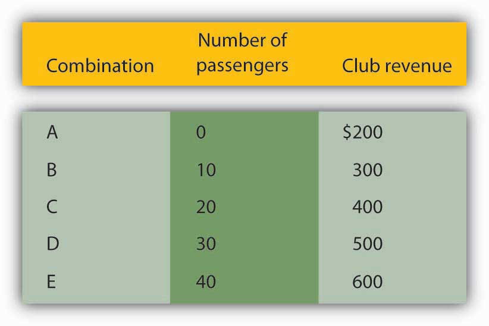The ski club receives $10 from each passenger riding its bus for a trip to and from the ski area plus a payment of $200 from the student government for each day the bus is available for these trips. The club’s revenues from any single day thus equal $200 plus $10 times the number of passengers. The table relates various combinations of the number of passengers and club revenues.
We can illustrate the relationship shown in the table with a graph. The procedure for showing the relationship between two variables, like the ones in Figure 35.1 "Ski Club Revenues", on a graph is illustrated in Figure 35.2 "Plotting a Graph". Let us look at the steps involved.
Figure 35.2 Plotting a Graph
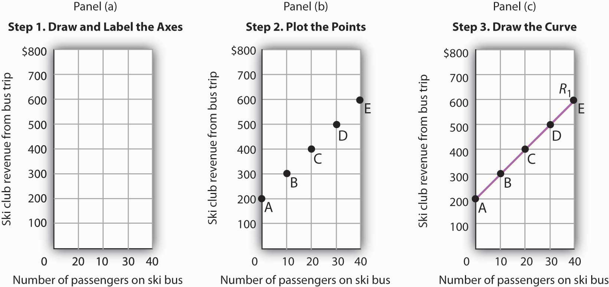Here we see how to show the information given in Figure 35.1 "Ski Club Revenues" in a graph.
The two variables shown in the table are the number of passengers taking the bus on a particular day and the club’s revenue from that trip. We begin our graph in Panel (a) of Figure 35.2 "Plotting a Graph" by drawing two axes to form a right angle. Each axis will represent a variable. The axes should be carefully labeled to reflect what is being measured on each axis.
It is customary to place the independent variable on the horizontal axis and the dependent variable on the vertical axis. Recall that, when two variables are related, the dependent variable is the one that changes in response to changes in the independent variable. Passengers generate revenue, so we can consider the number of passengers as the independent variable and the club’s revenue as the dependent variable. The number of passengers thus goes on the horizontal axis; the club’s revenue from a trip goes on the vertical axis. In some cases, the variables in a graph cannot be considered independent or dependent. In those cases, the variables may be placed on either axis; we will encounter such a case in the chapter that introduces the production possibilities model. In other cases, economists simply ignore the rule; we will encounter that case in the chapter that introduces the model of demand and supply. The rule that the independent variable goes on the horizontal axis and the dependent variable goes on the vertical usually holds, but not always.
The point at which the axes intersect is called the originThe point at which the axes of a graph intersect. of the graph. Notice that in Figure 35.2 "Plotting a Graph" the origin has a value of zero for each variable.
In drawing a graph showing numeric values, we also need to put numbers on the axes. For the axes in Panel (a), we have chosen numbers that correspond to the values in the table. The number of passengers ranges up to 40 for a trip; club revenues from a trip range from $200 (the payment the club receives from student government) to $600. We have extended the vertical axis to $800 to allow some changes we will consider below. We have chosen intervals of 10 passengers on the horizontal axis and $100 on the vertical axis. The choice of particular intervals is mainly a matter of convenience in drawing and reading the graph; we have chosen the ones here because they correspond to the intervals given in the table.
We have drawn vertical lines from each of the values on the horizontal axis and horizontal lines from each of the values on the vertical axis. These lines, called gridlines, will help us in Step 2.
Each of the rows in the table in Figure 35.1 "Ski Club Revenues" gives a combination of the number of passengers on the bus and club revenue from a particular trip. We can plot these values in our graph.
We begin with the first row, A, corresponding to zero passengers and club revenue of $200, the payment from student government. We read up from zero passengers on the horizontal axis to $200 on the vertical axis and mark point A. This point shows that zero passengers result in club revenues of $200.
The second combination, B, tells us that if 10 passengers ride the bus, the club receives $300 in revenue from the trip—$100 from the $10-per-passenger charge plus the $200 from student government. We start at 10 passengers on the horizontal axis and follow the gridline up. When we travel up in a graph, we are traveling with respect to values on the vertical axis. We travel up by $300 and mark point B.
Points in a graph have a special significance. They relate the values of the variables on the two axes to each other. Reading to the left from point B, we see that it shows $300 in club revenue. Reading down from point B, we see that it shows 10 passengers. Those values are, of course, the values given for combination B in the table.
We repeat this process to obtain points C, D, and E. Check to be sure that you see that each point corresponds to the values of the two variables given in the corresponding row of the table.
The graph in Panel (b) is called a scatter diagram. A scatter diagramA graph that shows individual points relating values of the variable on one axis to values of the variable on the other. shows individual points relating values of the variable on one axis to values of the variable on the other.
The final step is to draw the curve that shows the relationship between the number of passengers who ride the bus and the club’s revenues from the trip. The term “curve” is used for any line in a graph that shows a relationship between two variables.
We draw a line that passes through points A through E. Our curve shows club revenues; we shall call it R1. Notice that R1 is an upward-sloping straight line. Notice also that R1 intersects the vertical axis at $200 (point A). The point at which a curve intersects an axis is called the interceptThe point at which a curve intersects an axis. of the curve. We often refer to the vertical or horizontal intercept of a curve; such intercepts can play a special role in economic analysis. The vertical intercept in this case shows the revenue the club would receive on a day it offered the trip and no one rode the bus.
To check your understanding of these steps, we recommend that you try plotting the points and drawing R1 for yourself in Panel (a). Better yet, draw the axes for yourself on a sheet of graph paper and plot the curve.
In this section, we will see how to compute the slope of a curve. The slopes of curves tell an important story: they show the rate at which one variable changes with respect to another.
The slopeThe ratio of the change in the value of the variable on the vertical axis to the change in the value of the variable on the horizontal axis measured between two points on the curve. of a curve equals the ratio of the change in the value of the variable on the vertical axis to the change in the value of the variable on the horizontal axis, measured between two points on the curve. You may have heard this called “the rise over the run.” In equation form, we can write the definition of the slope as
Equation 35.1
Equation 35.1 is the first equation in this text. Figure 35.3 "Reading and Using Equations" provides a short review of working with equations. The material in this text relies much more heavily on graphs than on equations, but we will use equations from time to time. It is important that you understand how to use them.
Figure 35.3 Reading and Using Equations
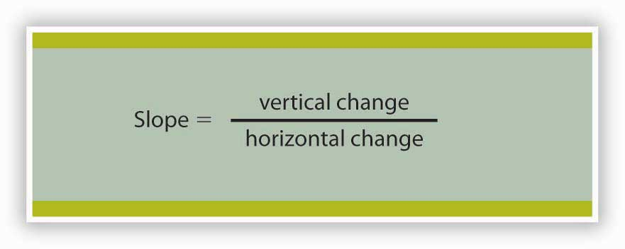Many equations in economics begin in the form of Equation 35.1, with the statement that one thing (in this case the slope) equals another (the vertical change divided by the horizontal change). In this example, the equation is written in words. Sometimes we use symbols in place of words. The basic idea though, is always the same: the term represented on the left side of the equals sign equals the term on the right side. In Equation 35.1 there are three variables: the slope, the vertical change, and the horizontal change. If we know the values of two of the three, we can compute the third. In the computation of slopes that follow, for example, we will use values for the two variables on the right side of the equation to compute the slope.
Figure 35.4 "Computing the Slope of a Curve" shows R1 and the computation of its slope between points B and D. Point B corresponds to 10 passengers on the bus; point D corresponds to 30. The change in the horizontal axis when we go from B to D thus equals 20 passengers. Point B corresponds to club revenues of $300; point D corresponds to club revenues of $500. The change in the vertical axis equals $200. The slope thus equals $200/20 passengers, or $10/passenger.
Figure 35.4 Computing the Slope of a Curve
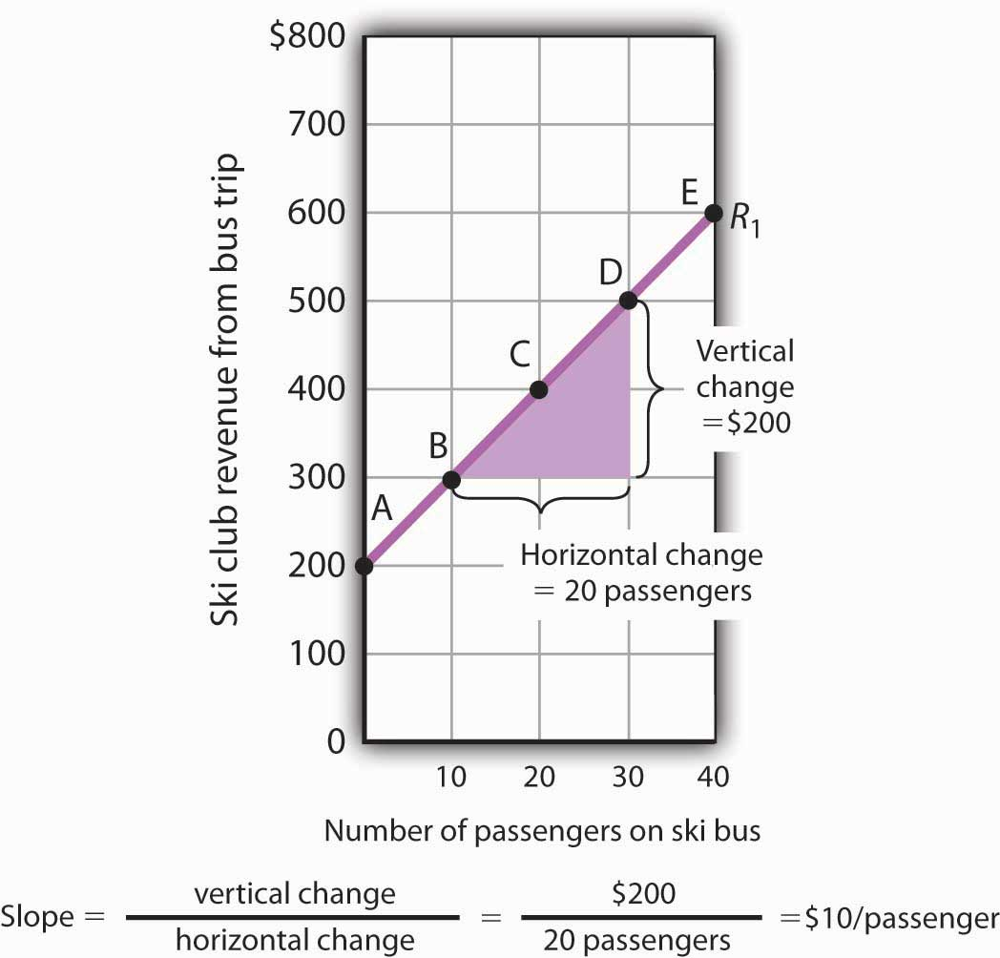
We have applied the definition of the slope of a curve to compute the slope of R1 between points B and D. That same definition is given in Equation 35.1. Applying the equation, we have:
The slope of this curve tells us the amount by which revenues rise with an increase in the number of passengers. It should come as no surprise that this amount equals the price per passenger. Adding a passenger adds $10 to the club’s revenues.
Notice that we can compute the slope of R1 between any two points on the curve and get the same value; the slope is constant. Consider, for example, points A and E. The vertical change between these points is $400 (we go from revenues of $200 at A to revenues of $600 at E). The horizontal change is 40 passengers (from zero passengers at A to 40 at E). The slope between A and E thus equals $400/(40 passengers) = $10/passenger. We get the same slope regardless of which pair of points we pick on R1 to compute the slope. The slope of R1 can be considered a constant, which suggests that it is a straight line. When the curve showing the relationship between two variables has a constant slope, we say there is a linear relationshipRelationship that exists between two variables when the curve between them has a constant slope. between the variables. A linear curveA curve with constant slope. is a curve with constant slope.
The fact that the slope of our curve equals $10/passenger tells us something else about the curve—$10/passenger is a positive, not a negative, value. A curve whose slope is positive is upward sloping. As we travel up and to the right along R1, we travel in the direction of increasing values for both variables. A positive relationshipRelationship that exists between two variables when both variables move in the same direction. between two variables is one in which both variables move in the same direction. Positive relationships are sometimes called direct relationships. There is a positive relationship between club revenues and passengers on the bus. We will look at a graph showing a negative relationship between two variables in the next section.
A negative relationshipRelationship that exists between two variables when the variables move in opposite directions. is one in which two variables move in opposite directions. A negative relationship is sometimes called an inverse relationship. The slope of a curve describing a negative relationship is always negative. A curve with a negative slope is always downward sloping.
As an example of a graph of a negative relationship, let us look at the impact of the cancellation of games by the National Basketball Association during the 1998–1999 labor dispute on the earnings of one player: Shaquille O’Neal. During the 1998–1999 season, O’Neal was the center for the Los Angeles Lakers.
O’Neal’s salary with the Lakers in 1998–1999 would have been about $17,220,000 had the 82 scheduled games of the regular season been played. But a contract dispute between owners and players resulted in the cancellation of 32 games. Mr. O’Neal’s salary worked out to roughly $210,000 per game, so the labor dispute cost him well over $6 million. Presumably, he was able to eke out a living on his lower income, but the cancellation of games cost him a great deal.
We show the relationship between the number of games canceled and O’Neal’s 1998–1999 basketball earnings graphically in Figure 35.5 "Canceling Games and Reducing Shaquille O’Neal’s Earnings". Canceling games reduced his earnings, so the number of games canceled is the independent variable and goes on the horizontal axis. O’Neal’s earnings are the dependent variable and go on the vertical axis. The graph assumes that his earnings would have been $17,220,000 had no games been canceled (point A, the vertical intercept). Assuming that his earnings fell by $210,000 per game canceled, his earnings for the season were reduced to $10,500,000 by the cancellation of 32 games (point B). We can draw a line between these two points to show the relationship between games canceled and O’Neal’s 1998–1999 earnings from basketball. In this graph, we have inserted a break in the vertical axis near the origin. This allows us to expand the scale of the axis over the range from $10,000,000 to $18,000,000. It also prevents a large blank space between the origin and an income of $10,500,000—there are no values below this amount.
Figure 35.5 Canceling Games and Reducing Shaquille O’Neal’s Earnings
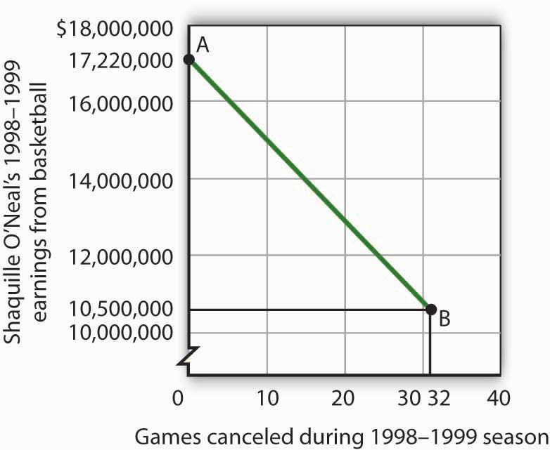If no games had been canceled during the 1998–1999 basketball season, Shaquille O’Neal would have earned $17,220,000 (point A). Assuming that his salary for the season fell by $210,000 for each game canceled, the cancellation of 32 games during the dispute between NBA players and owners reduced O’Neal’s earnings to $10,500,000 (point B).
What is the slope of the curve in Figure 35.5 "Canceling Games and Reducing Shaquille O’Neal’s Earnings"? We have data for two points, A and B. At A, O’Neal’s basketball salary would have been $17,220,000. At B, it is $10,500,000. The vertical change between points A and B equals -$6,720,000. The change in the horizontal axis is from zero games canceled at A to 32 games canceled at B. The slope is thus
Notice that this time the slope is negative, hence the downward-sloping curve. As we travel down and to the right along the curve, the number of games canceled rises and O’Neal’s salary falls. In this case, the slope tells us the rate at which O’Neal lost income as games were canceled.
The slope of O’Neal’s salary curve is also constant. That means there was a linear relationship between games canceled and his 1998–1999 basketball earnings.
When we draw a graph showing the relationship between two variables, we make an important assumption. We assume that all other variables that might affect the relationship between the variables in our graph are unchanged. When one of those other variables changes, the relationship changes, and the curve showing that relationship shifts.
Consider, for example, the ski club that sponsors bus trips to the ski area. The graph we drew in Figure 35.2 "Plotting a Graph" shows the relationship between club revenues from a particular trip and the number of passengers on that trip, assuming that all other variables that might affect club revenues are unchanged. Let us change one. Suppose the school’s student government increases the payment it makes to the club to $400 for each day the trip is available. The payment was $200 when we drew the original graph. Panel (a) of Figure 35.6 "Shifting a Curve: An Increase in Revenues" shows how the increase in the payment affects the table we had in Figure 35.1 "Ski Club Revenues"; Panel (b) shows how the curve shifts. Each of the new observations in the table has been labeled with a prime: A′, B′, etc. The curve R1 shifts upward by $200 as a result of the increased payment. A shift in a curveChange in the graph of a relationship between two variables that implies new values of one variable at each value of the other variable. implies new values of one variable at each value of the other variable. The new curve is labeled R2. With 10 passengers, for example, the club’s revenue was $300 at point B on R1. With the increased payment from the student government, its revenue with 10 passengers rises to $500 at point B′ on R2. We have a shift in the curve.
Figure 35.6 Shifting a Curve: An Increase in Revenues
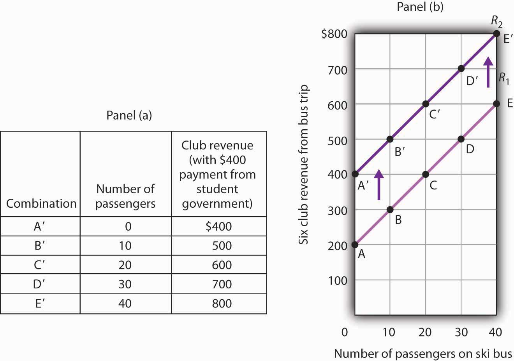The table in Panel (a) shows the new level of revenues the ski club receives with varying numbers of passengers as a result of the increased payment from student government. The new curve is shown in dark purple in Panel (b). The old curve is shown in light purple.
It is important to distinguish between shifts in curves and movements along curves. A movement along a curveChange from one point on the curve to another that occurs when the dependent variable changes in response to a change in the independent variable. is a change from one point on the curve to another that occurs when the dependent variable changes in response to a change in the independent variable. If, for example, the student government is paying the club $400 each day it makes the ski bus available and 20 passengers ride the bus, the club is operating at point C′ on R2. If the number of passengers increases to 30, the club will be at point D′ on the curve. This is a movement along a curve; the curve itself does not shift.
Now suppose that, instead of increasing its payment, the student government eliminates its payments to the ski club for bus trips. The club’s only revenue from a trip now comes from its $10/passenger charge. We have again changed one of the variables we were holding unchanged, so we get another shift in our revenue curve. The table in Panel (a) of Figure 35.7 "Shifting a Curve: A Reduction in Revenues" shows how the reduction in the student government’s payment affects club revenues. The new values are shown as combinations A″ through E″ on the new curve, R3, in Panel (b). Once again we have a shift in a curve, this time from R1 to R3.
Figure 35.7 Shifting a Curve: A Reduction in Revenues
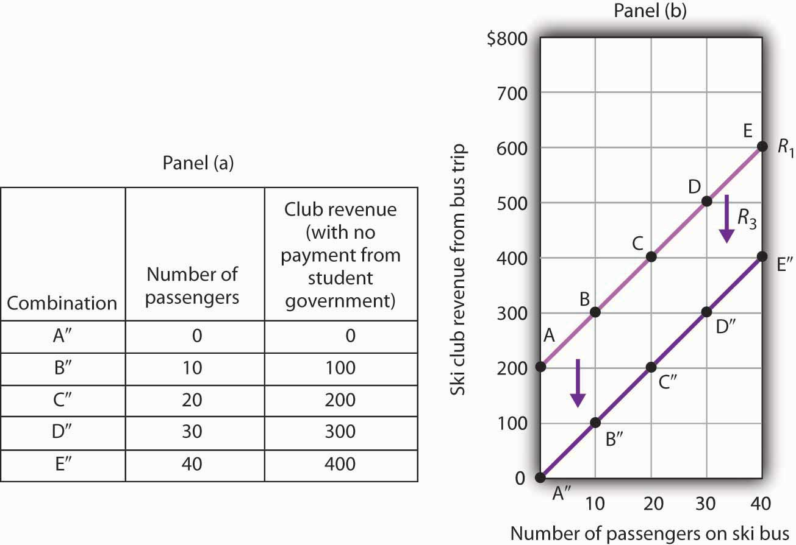The table in Panel (a) shows the impact on ski club revenues of an elimination of support from the student government for ski bus trips. The club’s only revenue now comes from the $10 it charges to each passenger. The new combinations are shown as A″ – E″. In Panel (b) we see that the original curve relating club revenue to the number of passengers has shifted down.
The shifts in Figure 35.6 "Shifting a Curve: An Increase in Revenues" and Figure 35.7 "Shifting a Curve: A Reduction in Revenues" left the slopes of the revenue curves unchanged. That is because the slope in all these cases equals the price per ticket, and the ticket price remains unchanged. Next, we shall see how the slope of a curve changes when we rotate it about a single point.
A rotation of a curveChange In a curve that occurs when its slope changes with one point on the curve fixed. occurs when we change its slope, with one point on the curve fixed. Suppose, for example, the ski club changes the price of its bus rides to the ski area to $30 per trip, and the payment from the student government remains $200 for each day the trip is available. This means the club’s revenues will remain $200 if it has no passengers on a particular trip. Revenue will, however, be different when the club has passengers. Because the slope of our revenue curve equals the price per ticket, the slope of the revenue curve changes.
Panel (a) of Figure 35.8 "Rotating a Curve" shows what happens to the original revenue curve, R1, when the price per ticket is raised. Point A does not change; the club’s revenue with zero passengers is unchanged. But with 10 passengers, the club’s revenue would rise from $300 (point B on R1) to $500 (point B′ on R4). With 20 passengers, the club’s revenue will now equal $800 (point C′ on R4).
Figure 35.8 Rotating a Curve
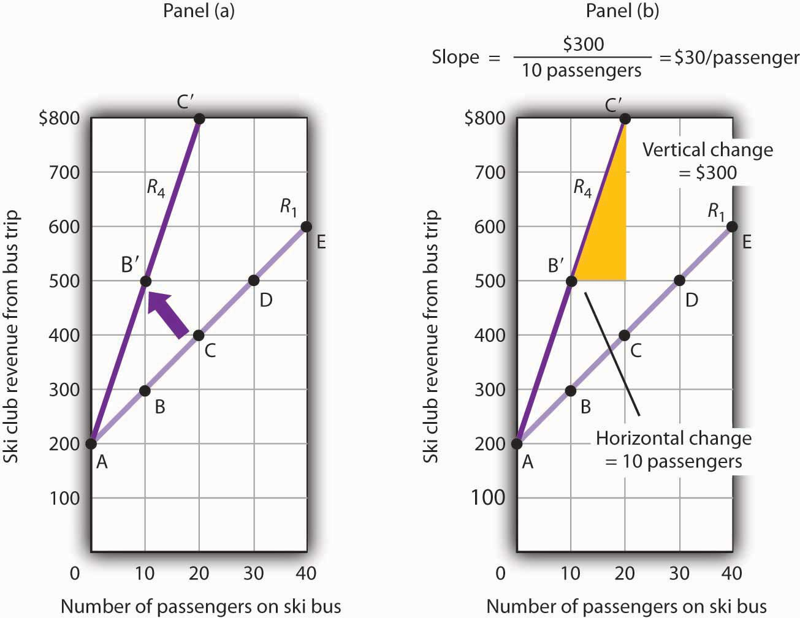A curve is said to rotate when a single point remains fixed while other points on the curve move; a rotation always changes the slope of a curve. Here an increase in the price per passenger to $30 would rotate the revenue curve from R1 to R4 in Panel (a). The slope of R4 is $30 per passenger.
The new revenue curve R4 is steeper than the original curve. Panel (b) shows the computation of the slope of the new curve between points B′ and C′. The slope increases to $30 per passenger—the new price of a ticket. The greater the slope of a positively sloped curve, the steeper it will be.
We have now seen how to draw a graph of a curve, how to compute its slope, and how to shift and rotate a curve. We have examined both positive and negative relationships. Our work so far has been with linear relationships. Next we will turn to nonlinear ones.
The following table shows the relationship between the number of gallons of gasoline people in a community are willing and able to buy per week and the price per gallon. Plot these points in the grid provided and label each point with the letter associated with the combination. Notice that there are breaks in both the vertical and horizontal axes of the grid. Draw a line through the points you have plotted. Does your graph suggest a positive or a negative relationship? What is the slope between A and B? Between B and C? Between A and C? Is the relationship linear?
Now suppose you are given the following information about the relationship between price per gallon and the number of gallons per week gas stations in the community are willing to sell.
Plot these points in the grid provided and draw a curve through the points you have drawn. Does your graph suggest a positive or a negative relationship? What is the slope between D and E? Between E and F? Between D and F? Is this relationship linear?
Here is the first graph. The curve’s downward slope tells us there is a negative relationship between price and the quantity of gasoline people are willing and able to buy. This curve, by the way, is a demand curve (the next one is a supply curve). We will study demand and supply soon; you will be using these curves a great deal. The slope between A and B is −0.002 (slope = vertical change/horizontal change = −0.20/100). The slope between B and C and between A and C is the same. That tells us the curve is linear, which, of course, we can see—it is a straight line.
Here is the supply curve. Its upward slope tells us there is a positive relationship between price per gallon and the number of gallons per week gas stations are willing to sell. The slope between D and E is 0.002 (slope equals vertical change/horizontal change = 0.20/100). Because the curve is linear, the slope is the same between any two points, for example, between E and F and between D and F.
In this section we will extend our analysis of graphs in two ways: first, we will explore the nature of nonlinear relationships; then we will have a look at graphs drawn without numbers.
In the graphs we have examined so far, adding a unit to the independent variable on the horizontal axis always has the same effect on the dependent variable on the vertical axis. When we add a passenger riding the ski bus, the ski club’s revenues always rise by the price of a ticket. The cancellation of one more game in the 1998–1999 basketball season would always reduce Shaquille O’Neal’s earnings by $210,000. The slopes of the curves describing the relationships we have been discussing were constant; the relationships were linear.
Many relationships in economics are nonlinear. A nonlinear relationshipRelationship between two variables in which the slope of the curve showing the relationship changes as the value of one of the variables changes. between two variables is one for which the slope of the curve showing the relationship changes as the value of one of the variables changes. A nonlinear curveA curve whose slope changes as the value of one of the variables changes. is a curve whose slope changes as the value of one of the variables changes.
Consider an example. Suppose Felicia Alvarez, the owner of a bakery, has recorded the relationship between her firm’s daily output of bread and the number of bakers she employs. The relationship she has recorded is given in the table in Panel (a) of Figure 35.9 "A Nonlinear Curve". The corresponding points are plotted in Panel (b). Clearly, we cannot draw a straight line through these points. Instead, we shall have to draw a nonlinear curve like the one shown in Panel (c).
Figure 35.9 A Nonlinear Curve
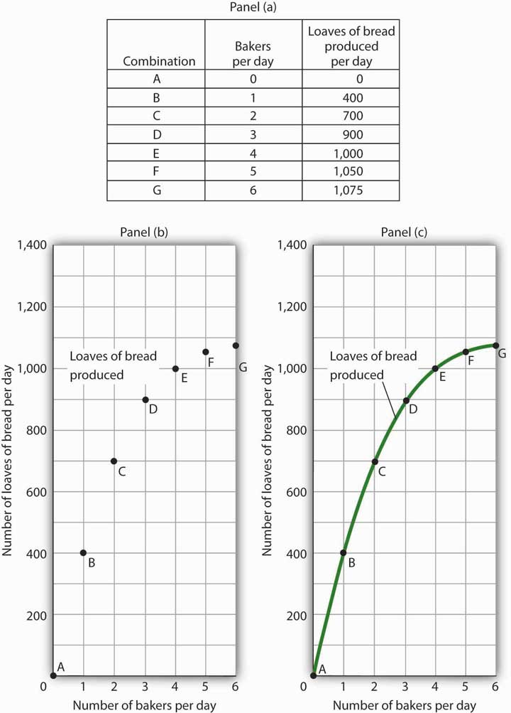The table in Panel (a) shows the relationship between the number of bakers Felicia Alvarez employs per day and the number of loaves of bread produced per day. This information is plotted in Panel (b). This is a nonlinear relationship; the curve connecting these points in Panel (c) (Loaves of bread produced) has a changing slope.
Inspecting the curve for loaves of bread produced, we see that it is upward sloping, suggesting a positive relationship between the number of bakers and the output of bread. But we also see that the curve becomes flatter as we travel up and to the right along it; it is nonlinear and describes a nonlinear relationship.
How can we estimate the slope of a nonlinear curve? After all, the slope of such a curve changes as we travel along it. We can deal with this problem in two ways. One is to consider two points on the curve and to compute the slope between those two points. Another is to compute the slope of the curve at a single point.
When we compute the slope of a curve between two points, we are really computing the slope of a straight line drawn between those two points. In Figure 35.10 "Estimating Slopes for a Nonlinear Curve", we have computed slopes between pairs of points A and B, C and D, and E and F on our curve for loaves of bread produced. These slopes equal 400 loaves/baker, 200 loaves/baker, and 50 loaves/baker, respectively. They are the slopes of the dashed-line segments shown. These dashed segments lie close to the curve, but they clearly are not on the curve. After all, the dashed segments are straight lines. Our curve relating the number of bakers to daily bread production is not a straight line; the relationship between the bakery’s daily output of bread and the number of bakers is nonlinear.
Figure 35.10 Estimating Slopes for a Nonlinear Curve
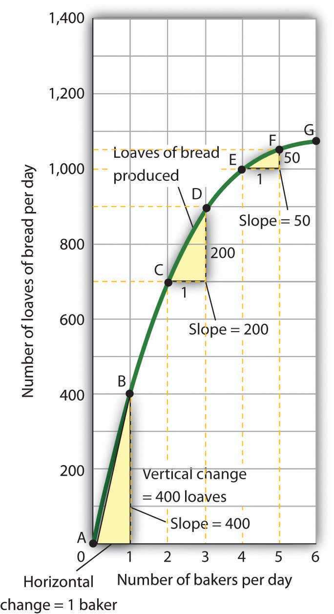We can estimate the slope of a nonlinear curve between two points. Here, slopes are computed between points A and B, C and D, and E and F. When we compute the slope of a nonlinear curve between two points, we are computing the slope of a straight line between those two points. Here the lines whose slopes are computed are the dashed lines between the pairs of points.
Every point on a nonlinear curve has a different slope. To get a precise measure of the slope of such a curve, we need to consider its slope at a single point. To do that, we draw a line tangent to the curve at that point. A tangent lineA straight line that touches, but does not intersect, a nonlinear curve at only one point. is a straight line that touches, but does not intersect, a nonlinear curve at only one point. The slope of a tangent line equals the slope of the curve at the point at which the tangent line touches the curve.
Consider point D in Panel (a) of Figure 35.11 "Tangent Lines and the Slopes of Nonlinear Curves". We have drawn a tangent line that just touches the curve showing bread production at this point. It passes through points labeled M and N. The vertical change between these points equals 300 loaves of bread; the horizontal change equals two bakers. The slope of the tangent line equals 150 loaves of bread/baker (300 loaves/2 bakers). The slope of our bread production curve at point D equals the slope of the line tangent to the curve at this point. In Panel (b), we have sketched lines tangent to the curve for loaves of bread produced at points B, D, and F. Notice that these tangent lines get successively flatter, suggesting again that the slope of the curve is falling as we travel up and to the right along it.
Figure 35.11 Tangent Lines and the Slopes of Nonlinear Curves
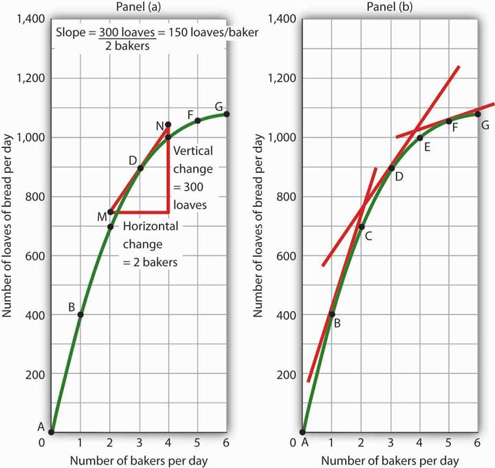Because the slope of a nonlinear curve is different at every point on the curve, the precise way to compute slope is to draw a tangent line; the slope of the tangent line equals the slope of the curve at the point the tangent line touches the curve. In Panel (a), the slope of the tangent line is computed for us: it equals 150 loaves/baker. Generally, we will not have the information to compute slopes of tangent lines. We will use them as in Panel (b), to observe what happens to the slope of a nonlinear curve as we travel along it. We see here that the slope falls (the tangent lines become flatter) as the number of bakers rises.
Notice that we have not been given the information we need to compute the slopes of the tangent lines that touch the curve for loaves of bread produced at points B and F. In this text, we will not have occasion to compute the slopes of tangent lines. Either they will be given or we will use them as we did here—to see what is happening to the slopes of nonlinear curves.
In the case of our curve for loaves of bread produced, the fact that the slope of the curve falls as we increase the number of bakers suggests a phenomenon that plays a central role in both microeconomic and macroeconomic analysis. As we add workers (in this case bakers), output (in this case loaves of bread) rises, but by smaller and smaller amounts. Another way to describe the relationship between the number of workers and the quantity of bread produced is to say that as the number of workers increases, the output increases at a decreasing rate. In Panel (b) of Figure 35.11 "Tangent Lines and the Slopes of Nonlinear Curves" we express this idea with a graph, and we can gain this understanding by looking at the tangent lines, even though we do not have specific numbers. Indeed, much of our work with graphs will not require numbers at all.
We turn next to look at how we can use graphs to express ideas even when we do not have specific numbers.
We know that a positive relationship between two variables can be shown with an upward-sloping curve in a graph. A negative or inverse relationship can be shown with a downward-sloping curve. Some relationships are linear and some are nonlinear. We illustrate a linear relationship with a curve whose slope is constant; a nonlinear relationship is illustrated with a curve whose slope changes. Using these basic ideas, we can illustrate hypotheses graphically even in cases in which we do not have numbers with which to locate specific points.
Consider first a hypothesis suggested by recent medical research: eating more fruits and vegetables each day increases life expectancy. We can show this idea graphically. Daily fruit and vegetable consumption (measured, say, in grams per day) is the independent variable; life expectancy (measured in years) is the dependent variable. Panel (a) of Figure 35.12 "Graphs Without Numbers" shows the hypothesis, which suggests a positive relationship between the two variables. Notice the vertical intercept on the curve we have drawn; it implies that even people who eat no fruit or vegetables can expect to live at least a while!
Figure 35.12 Graphs Without Numbers
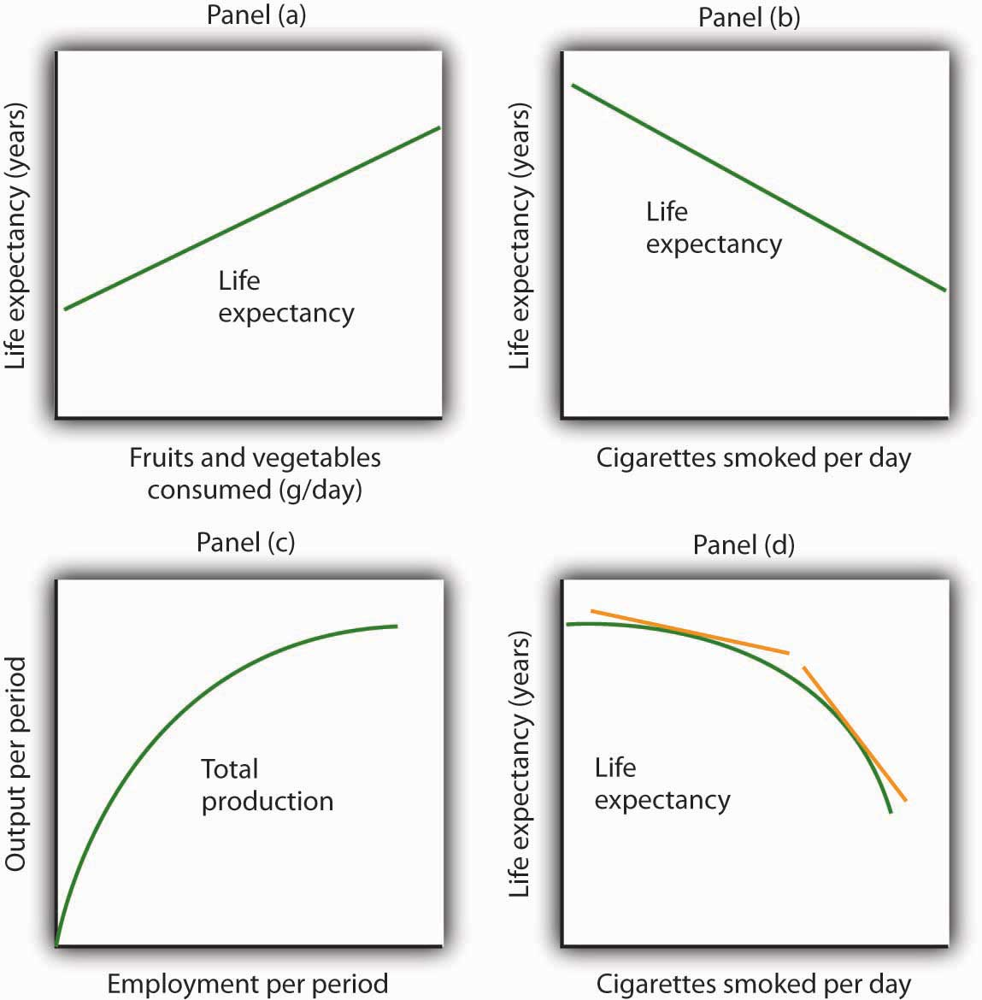We often use graphs without numbers to suggest the nature of relationships between variables. The graphs in the four panels correspond to the relationships described in the text.
Panel (b) illustrates another hypothesis we hear often: smoking cigarettes reduces life expectancy. Here the number of cigarettes smoked per day is the independent variable; life expectancy is the dependent variable. The hypothesis suggests a negative relationship. Hence, we have a downward-sloping curve.
Now consider a general form of the hypothesis suggested by the example of Felicia Alvarez’s bakery: increasing employment each period increases output each period, but by smaller and smaller amounts. As we saw in Figure 35.9 "A Nonlinear Curve", this hypothesis suggests a positive, nonlinear relationship. We have drawn a curve in Panel (c) of Figure 35.12 "Graphs Without Numbers" that looks very much like the curve for bread production in Figure 35.11 "Tangent Lines and the Slopes of Nonlinear Curves". It is upward sloping, and its slope diminishes as employment rises.
Finally, consider a refined version of our smoking hypothesis. Suppose we assert that smoking cigarettes does reduce life expectancy and that increasing the number of cigarettes smoked per day reduces life expectancy by a larger and larger amount. Panel (d) shows this case. Again, our life expectancy curve slopes downward. But now it suggests that smoking only a few cigarettes per day reduces life expectancy only a little but that life expectancy falls by more and more as the number of cigarettes smoked per day increases.
We have sketched lines tangent to the curve in Panel (d). The slopes of these tangent lines are negative, suggesting the negative relationship between smoking and life expectancy. They also get steeper as the number of cigarettes smoked per day rises. Whether a curve is linear or nonlinear, a steeper curve is one for which the absolute value of the slope rises as the value of the variable on the horizontal axis rises. When we speak of the absolute value of a negative number such as −4, we ignore the minus sign and simply say that the absolute value is 4. The absolute value of −8, for example, is greater than the absolute value of −4, and a curve with a slope of −8 is steeper than a curve whose slope is −4.
Thus far our work has focused on graphs that show a relationship between variables. We turn finally to an examination of graphs and charts that show values of one or more variables, either over a period of time or at a single point in time.
Consider the following curve drawn to show the relationship between two variables, A and B (we will be using a curve like this one in the next chapter). Explain whether the relationship between the two variables is positive or negative, linear or nonlinear. Sketch two lines tangent to the curve at different points on the curve, and explain what is happening to the slope of the curve.
The relationship between variable A shown on the vertical axis and variable B shown on the horizontal axis is negative. This is sometimes referred to as an inverse relationship. Variables that give a straight line with a constant slope are said to have a linear relationship. In this case, however, the relationship is nonlinear. The slope changes all along the curve. In this case the slope becomes steeper as we move downward to the right along the curve, as shown by the two tangent lines that have been drawn. As the quantity of B increases, the quantity of A decreases at an increasing rate.
You often see pictures representing numerical information. These pictures may take the form of graphs that show how a particular variable has changed over time, or charts that show values of a particular variable at a single point in time. We will close our introduction to graphs by looking at both ways of conveying information.
One of the most common types of graphs used in economics is called a time-series graph. A time-series graphA graph that shows how the value of a particular variable or variables has changed over some period of time. shows how the value of a particular variable or variables has changed over some period of time. One of the variables in a time-series graph is time itself. Time is typically placed on the horizontal axis in time-series graphs. The other axis can represent any variable whose value changes over time.
The table in Panel (a) of Figure 35.13 "A Time-Series Graph" shows annual values of the unemployment rate, a measure of the percentage of workers who are looking for and available for work but are not working, in the United States from 1998 to 2007. The grid with which these values are plotted is given in Panel (b). Notice that the vertical axis is scaled from 3 to 8%, instead of beginning with zero. Time-series graphs are often presented with the vertical axis scaled over a certain range. The result is the same as introducing a break in the vertical axis, as we did in Figure 35.5 "Canceling Games and Reducing Shaquille O’Neal’s Earnings"
Figure 35.13 A Time-Series Graph

Panel (a) gives values of the U.S. unemployment rate from 1998 to 2010. These points are then plotted in Panel (b). To draw a time-series graph, we connect these points, as in Panel (c).
The values for the U.S. unemployment rate are plotted in Panel (b) of Figure 35.13 "A Time-Series Graph". The points plotted are then connected with a line in Panel (c).
The scaling of the vertical axis in time-series graphs can give very different views of economic data. We can make a variable appear to change a great deal, or almost not at all, depending on how we scale the axis. For that reason, it is important to note carefully how the vertical axis in a time-series graph is scaled.
Consider, for example, the issue of whether an increase or decrease in income tax rates has a significant effect on federal government revenues. This became a big issue in 1993, when President Clinton proposed an increase in income tax rates. The measure was intended to boost federal revenues. Critics of the president’s proposal argued that changes in tax rates have little or no effect on federal revenues. Higher tax rates, they said, would cause some people to scale back their income-earning efforts and thus produce only a small gain—or even a loss—in revenues. Op-ed essays in The Wall Street Journal, for example, often showed a graph very much like that presented in Panel (a) of Figure 35.14 "Two Tales of Taxes and Income". It shows federal revenues as a percentage of gross domestic product (GDP), a measure of total income in the economy, since 1960. Various tax reductions and increases were enacted during that period, but Panel (a) appears to show they had little effect on federal revenues relative to total income.
Figure 35.14 Two Tales of Taxes and Income
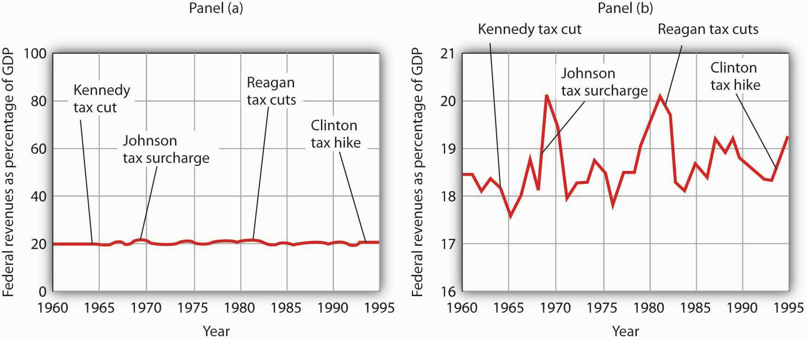A graph of federal revenues as a percentage of GDP emphasizes the stability of the relationship when plotted with the vertical axis scaled from 0 to 100, as in Panel (a). Scaling the vertical axis from 16 to 21%, as in Panel (b), stresses the short-term variability of the percentage and suggests that major tax rate changes have affected federal revenues.
Laura Tyson, then President Clinton’s chief economic adviser, charged that those graphs were misleading. In a Wall Street Journal piece, she noted the scaling of the vertical axis used by the president’s critics. She argued that a more reasonable scaling of the axis shows that federal revenues tend to increase relative to total income in the economy and that cuts in taxes reduce the federal government’s share. Her alternative version of these events does, indeed, suggest that federal receipts have tended to rise and fall with changes in tax policy, as shown in Panel (b) of Figure 35.14 "Two Tales of Taxes and Income".
Which version is correct? Both are. Both graphs show the same data. It is certainly true that federal revenues, relative to economic activity, have been remarkably stable over the past several decades, as emphasized by the scaling in Panel (a). But it is also true that the federal share has varied between about 17 and 20%. And a small change in the federal share translates into a large amount of tax revenue.
It is easy to be misled by time-series graphs. Large changes can be made to appear trivial and trivial changes to appear large through an artful scaling of the axes. The best advice for a careful consumer of graphical information is to note carefully the range of values shown and then to decide whether the changes are really significant.
John Maynard Keynes, one of the most famous economists ever, proposed in 1936 a hypothesis about total spending for consumer goods in the economy. He suggested that this spending was positively related to the income households receive. One way to test such a hypothesis is to draw a time-series graph of both variables to see whether they do, in fact, tend to move together. Figure 35.15 "A Time-Series Graph of Disposable Income and Consumption" shows the values of consumption spending and disposable income, which is after-tax income received by households. Annual values of consumption and disposable income are plotted for the period 1960–2007. Notice that both variables have tended to move quite closely together. The close relationship between consumption and disposable income is consistent with Keynes’s hypothesis that there is a positive relationship between the two variables.
Figure 35.15 A Time-Series Graph of Disposable Income and Consumption

Plotted in a time-series graph, disposable income and consumption appear to move together. This is consistent with the hypothesis that the two are directly related.
Source: Department of Commerce
The fact that two variables tend to move together in a time series does not by itself prove that there is a systematic relationship between the two. Figure 35.16 "Stock Prices and a Mystery Variable" shows a time-series graph of monthly values in 1987 of the Dow Jones Industrial Average, an index that reflects the movement of the prices of common stock. Notice the steep decline in the index beginning in October, not unlike the steep decline in October 2008.
Figure 35.16 Stock Prices and a Mystery Variable
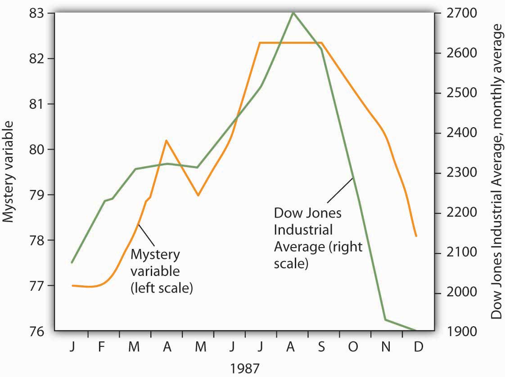The movement of the monthly average of the Dow Jones Industrial Average, a widely reported index of stock values, corresponded closely to changes in a mystery variable, X. Did the mystery variable contribute to the crash?
It would be useful, and certainly profitable, to be able to predict such declines. Figure 35.16 "Stock Prices and a Mystery Variable" also shows the movement of monthly values of a “mystery variable,” X, for the same period. The mystery variable and stock prices appear to move closely together. Was the plunge in the mystery variable in October responsible for the stock crash? The answer is: Not likely. The mystery value is monthly average temperatures in San Juan, Puerto Rico. Attributing the stock crash in 1987 to the weather in San Juan would be an example of the fallacy of false cause.
Notice that Figure 35.16 "Stock Prices and a Mystery Variable" has two vertical axes. The left-hand axis shows values of temperature; the right-hand axis shows values for the Dow Jones Industrial Average. Two axes are used here because the two variables, San Juan temperature and the Dow Jones Industrial Average, are scaled in different units.
We can use a table to show data. Consider, for example, the information compiled each year by the U.S. National Center for Education Statistics. The table in Panel (a) of Figure 35.17 "Bachelor’s Degrees Earned by Field, 2009" shows the results of the 2009 survey. In the groupings given, economics is included among the social sciences.
Figure 35.17 Bachelor’s Degrees Earned by Field, 2009
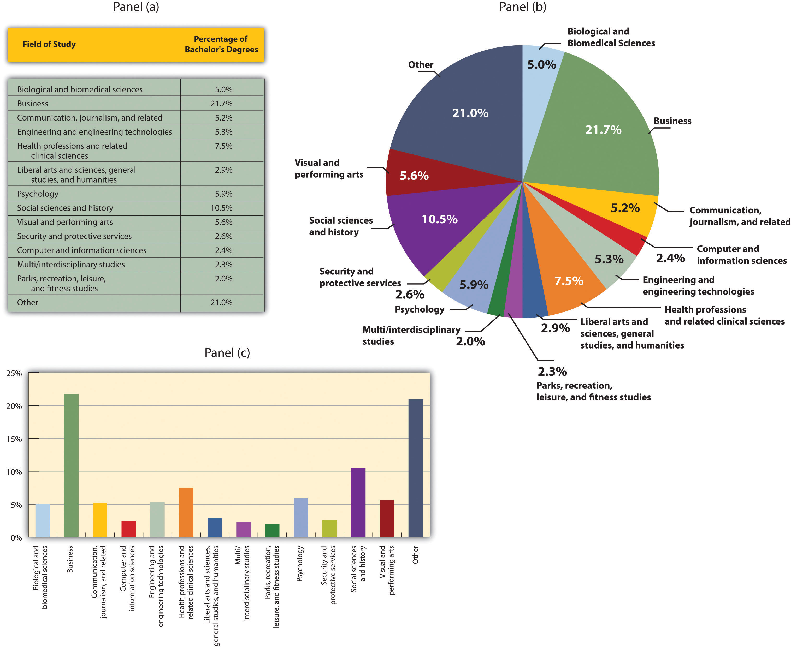Panels (a), (b), and (c) show bachelor’s degrees earned by field in 2009 in United States. All three panels present the same information. Panel (a) is an example of a table, Panel (b) is an example of a pie chart, and Panel (c) is an example of a vertical bar chart.
Source: Statistical Abstracts of the United States, 2012, Table 302. Bachelor’s Degrees Earned by Field, 1980 to 2009, based on data from U.S. National Center for Education Statistics, Digest of Educational Statistics. Percentages shown are for broad academic areas, each of which includes several majors.
Panels (b) and (c) of Figure 35.17 "Bachelor’s Degrees Earned by Field, 2009" present the same information in two types of charts. Panel (b) is an example of a pie chart; Panel (c) gives the data in a bar chart. The bars in this chart are horizontal; they may also be drawn as vertical. Either type of graph may be used to provide a picture of numeric information.
The table in Panel (a) shows a measure of the inflation rate, the percentage change in the average level of prices below. Panels (b) and (c) provide blank grids. We have already labeled the axes on the grids in Panels (b) and (c). It is up to you to plot the data in Panel (a) on the grids in Panels (b) and (c). Connect the points you have marked in the grid using straight lines between the points. What relationship do you observe? Has the inflation rate generally increased or decreased? What can you say about the trend of inflation over the course of the 1990s? Do you tend to get a different “interpretation” depending on whether you use Panel (b) or Panel (c) to guide you?

Here are the time-series graphs, Panels (b) and (c), for the information in Panel (a). The first thing you should notice is that both graphs show that the inflation rate generally declined throughout the 1990s (with the exception of 1996, when it increased). The generally downward direction of the curve suggests that the trend of inflation was downward. Notice that in this case we do not say negative, since in this instance it is not the slope of the line that matters. Rather, inflation itself is still positive (as indicated by the fact that all the points are above the origin) but is declining. Finally, comparing Panels (b) and (c) suggests that the general downward trend in the inflation rate is emphasized less in Panel (b) than in Panel (c). This impression would be emphasized even more if the numbers on the vertical axis were increased in Panel (b) from 20 to 100. Just as in Figure 35.14 "Two Tales of Taxes and Income", it is possible to make large changes appear trivial by simply changing the scaling of the axes.
Panel (a) shows a graph of a positive relationship; Panel (b) shows a graph of a negative relationship. Decide whether each proposition below demonstrates a positive or negative relationship, and decide which graph you would expect to illustrate each proposition. In each statement, identify which variable is the independent variable and thus goes on the horizontal axis, and which variable is the dependent variable and goes on the vertical axis.
Suppose you have a graph showing the results of a survey asking people how many left and right shoes they owned. The results suggest that people with one left shoe had, on average, one right shoe. People with seven left shoes had, on average, seven right shoes. Put left shoes on the vertical axis and right shoes on the horizontal axis; plot the following observations:
| Left shoes | 1 | 2 | 3 | 4 | 5 | 6 | 7 |
| Right shoes | 1 | 2 | 3 | 4 | 5 | 6 | 7 |
Is this relationship positive or negative? What is the slope of the curve?
Suppose your assistant inadvertently reversed the order of numbers for right shoe ownership in the survey above. You thus have the following table of observations:
| Left shoes | 1 | 2 | 3 | 4 | 5 | 6 | 7 |
| Right shoes | 7 | 6 | 5 | 4 | 3 | 2 | 1 |
Is the relationship between these numbers positive or negative? What’s implausible about that?
Suppose some of Ms. Alvarez’s kitchen equipment breaks down. The following table gives the values of bread output that were shown in Figure 35.9 "A Nonlinear Curve" It also gives the new levels of bread output that Ms. Alvarez’s bakers produce following the breakdown. Plot the two curves. What has happened?
| A | B | C | D | E | F | G | |
|---|---|---|---|---|---|---|---|
| Bakers/day | 0 | 1 | 2 | 3 | 4 | 5 | 6 |
| Loaves/day | 0 | 400 | 700 | 900 | 1,000 | 1,050 | 1,075 |
| Loaves/day after breakdown | 0 | 380 | 670 | 860 | 950 | 990 | 1,005 |
Steven Magee has suggested that there is a relationship between the number of lawyers per capita in a country and the country’s rate of economic growth. The relationship is described with the following Magee curve.
What do you think is the argument made by the curve? What kinds of countries do you think are on the upward- sloping region of the curve? Where would you guess the United States is? Japan? Does the Magee curve seem plausible to you?
Draw graphs showing the likely relationship between each of the following pairs of variables. In each case, put the first variable mentioned on the horizontal axis and the second on the vertical axis.